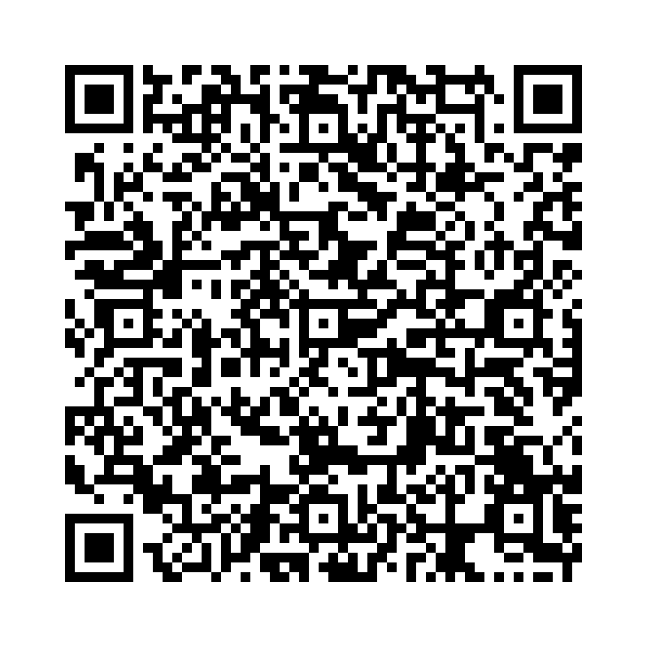

付加疑問文（tag question）は、主文の後に短い疑問文を付け加えて確認や同意を求める構文です。
例： You are a student, aren't you?（あなたは学生ですよね？）
付加疑問文では、次のような短縮形がよく使われます。
以下の単語を並べ替えて正しい文を作成しましょう。（和訳を参考にしてください）

問題 1： (you / student / aren't / a / are / , / ?) - あなたは学生ですよね？
解答： You are a student, aren't you?
解説： 肯定文の後は否定の付加疑問を付けます。
問題 2： (can / she / swim / can't / she / , / ?) - 彼女は泳げますよね？
解答： She can swim, can't she?
解説： 助動詞「can」を使った文では、付加疑問でも「can」を使います。
問題 3： (pizza / you / like / don't / you / , / ?) - あなたはピザが好きですよね？
解答： You like pizza, don't you?
解説： 一般動詞の肯定文では、付加疑問に「don't」や「doesn't」を使います。
問題 4： (will / it / be / sunny / won't / it / , / ?) - 明日は晴れますよね？
解答： It will be sunny, won't it?
解説： 未来の助動詞「will」の否定形は「won't」になります。
問題 5： (is / it / isn't / a fun / this / game / , / ?) - これは楽しいゲームですよね？
解答： This is a fun game, isn't it?
解説： 「This is ～」の付加疑問文では「isn't it」を使います。